Modeling & Control · Reinforcement Learning
Model-Based and Learning-Based Control of a 2-DOF Manipulator
This project asks a practical control question: when the analytical model is imperfect, is it better to replace the controller with model-free reinforcement learning, or to preserve the known physics and learn only the missing dynamics? The study connects controlled model mismatch to actuator-level torque deficit, then compares exact-model CTC, mismatched CTC, Pure SAC, and CTC + Residual SAC on the same Cartesian end-effector task.
1. Study Design
A 2-DOF planar manipulator is used because it is the minimum system that still preserves the nonlinear effects needed for a meaningful control study: configuration-dependent inertia, gravity, Coriolis and centrifugal terms, multi-joint coupling, forward/inverse kinematics, and the distinction between joint-space and Cartesian task-space behavior. The final task is end-effector trajectory tracking; joint references are internal quantities used where required by the model-based controller.
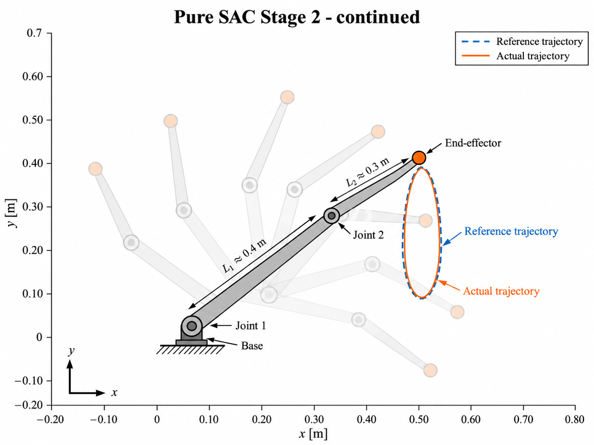
2. Exact Model vs. Structured Model Error
With the controller model matched to the plant, computed-torque control provides a very strong nominal reference: Stage-3 Cartesian RMSE is only 0.195 mm. This result is treated as an ideal model-consistency benchmark, not a prediction of hardware accuracy.
The robustness study then changes only the controller's estimate of the second-link mass, from the true 1.50 kg to 1.05 kg—a 30% underestimate. Keeping every other parameter unchanged makes the degradation physically traceable instead of hiding it inside broad randomization.
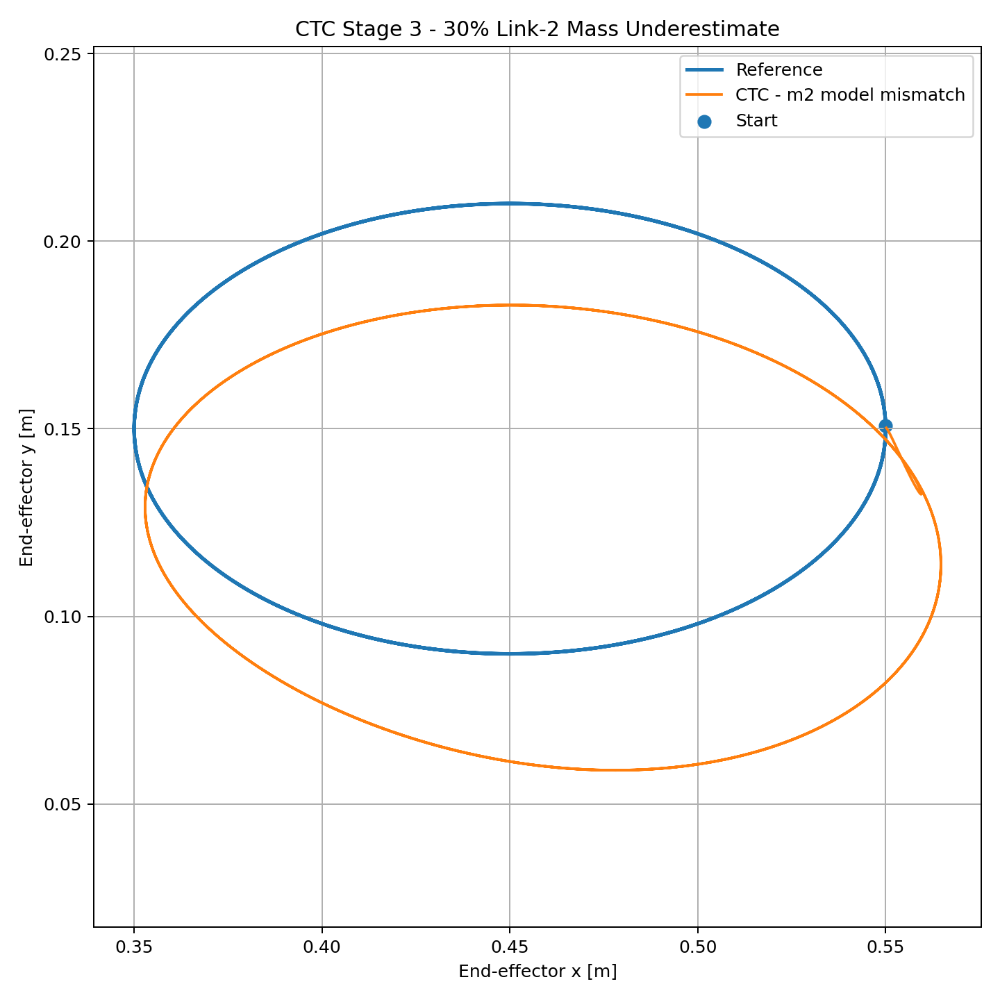
Rather than stopping at the observation that the trajectory is wrong, the study computes the torque missing from the mismatched controller at the same state and reference. The dominant deficit appears at joint 1, where the closed-loop mismatch trajectory shows approximately 2.318 Nm RMS missing torque.
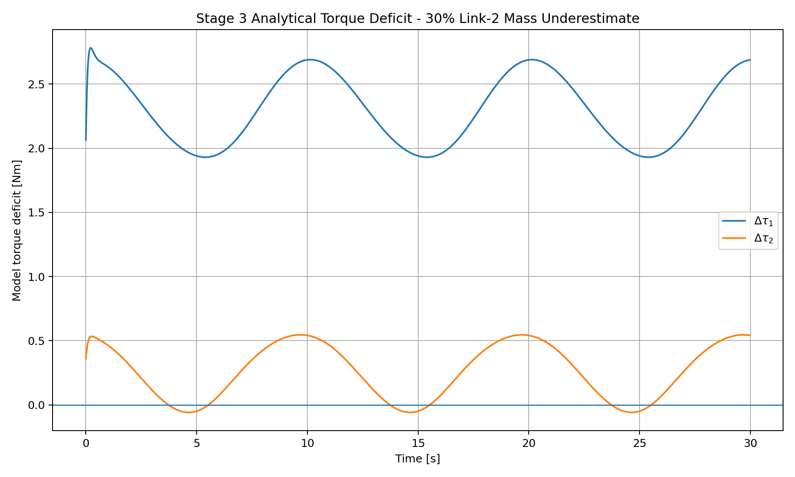
3. Pure SAC — Learning the Full Control Law
Pure SAC receives the robot state and Cartesian reference and directly generates normalized actuator commands over the full physical torque range. No analytical inverse-dynamics terms are exposed to the policy. Because the final Stage-3 task combines geometry, phase, joint coordination, and higher velocity/acceleration demand, training progresses through a Cartesian curriculum rather than starting from the hardest trajectory.
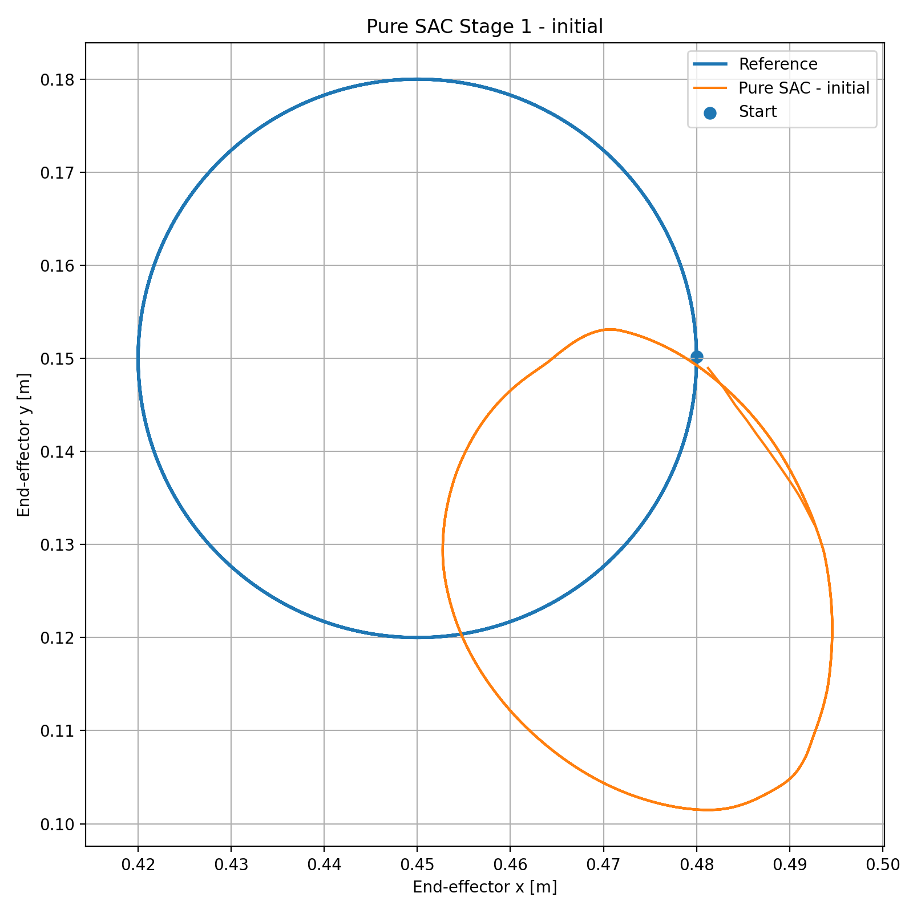
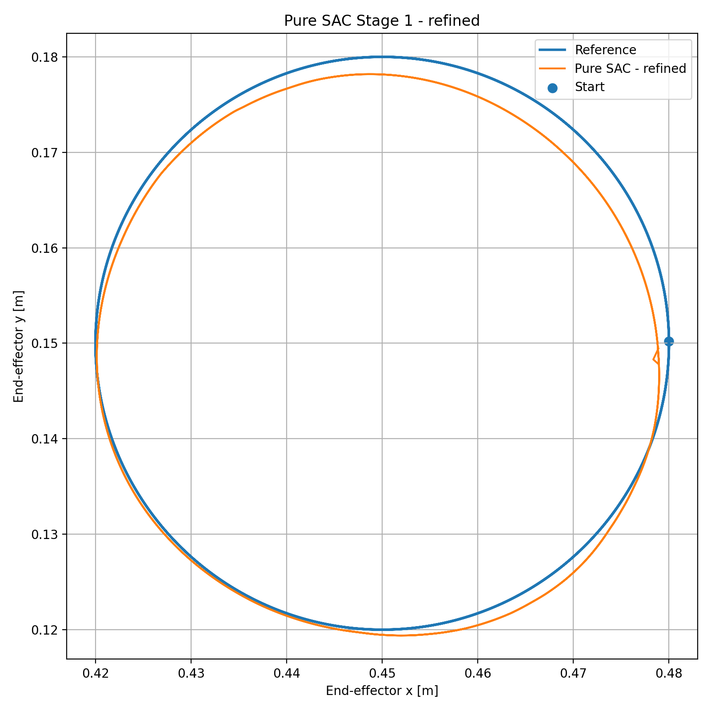
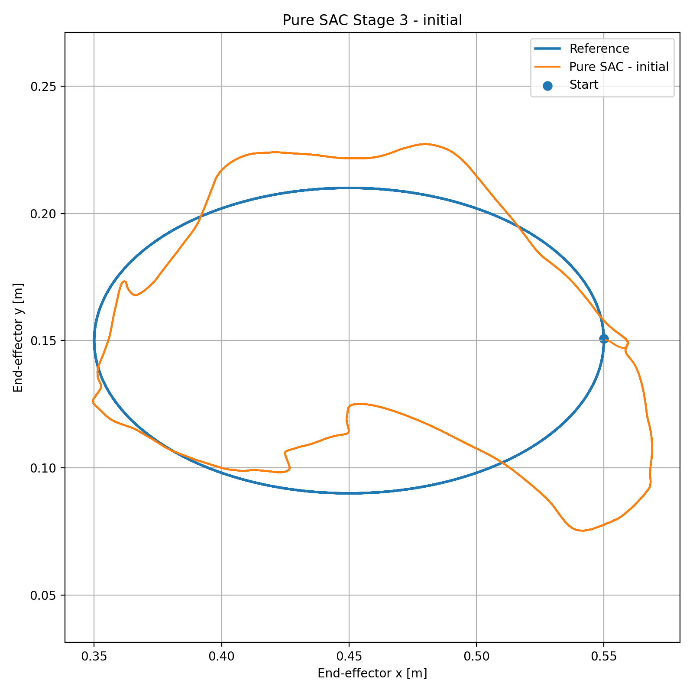
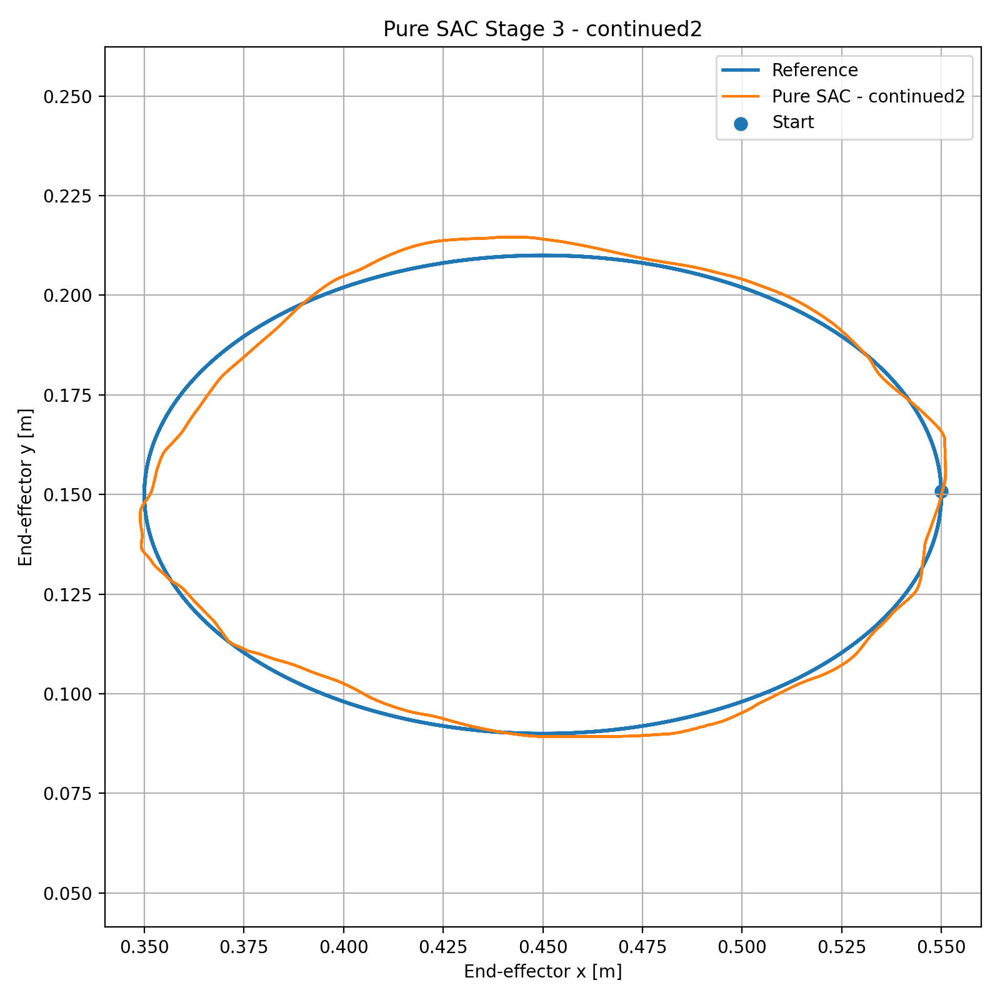
4. Residual SAC — Keep the Physics, Learn the Missing Part
The residual architecture keeps the mismatched CTC as the baseline controller and asks SAC to learn only a bounded correction:
Residual limits of [5, 2] Nm are selected from the measured analytical deficit with additional margin. This gives the learned policy enough authority to correct the missing dynamics while keeping the classical controller responsible for the dominant structure of the task.
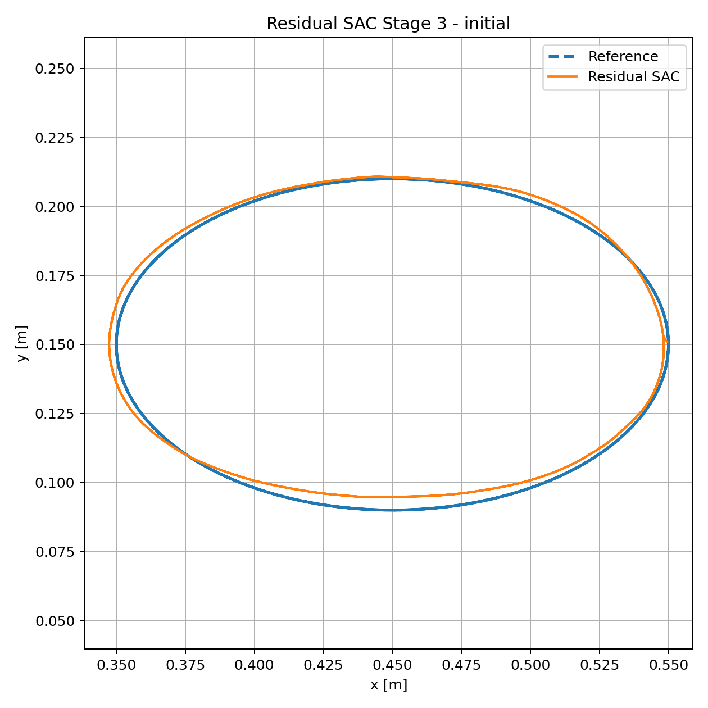
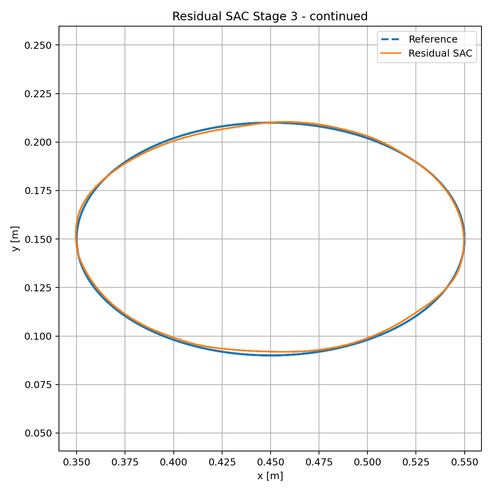
5. Did the Policy Learn the Missing Physics?
Trajectory accuracy alone cannot answer this question. The final residual torque is therefore compared at the same actual state and reference against the analytical torque deficit created by the wrong dynamics model. This is the main physical interpretation step of the project.
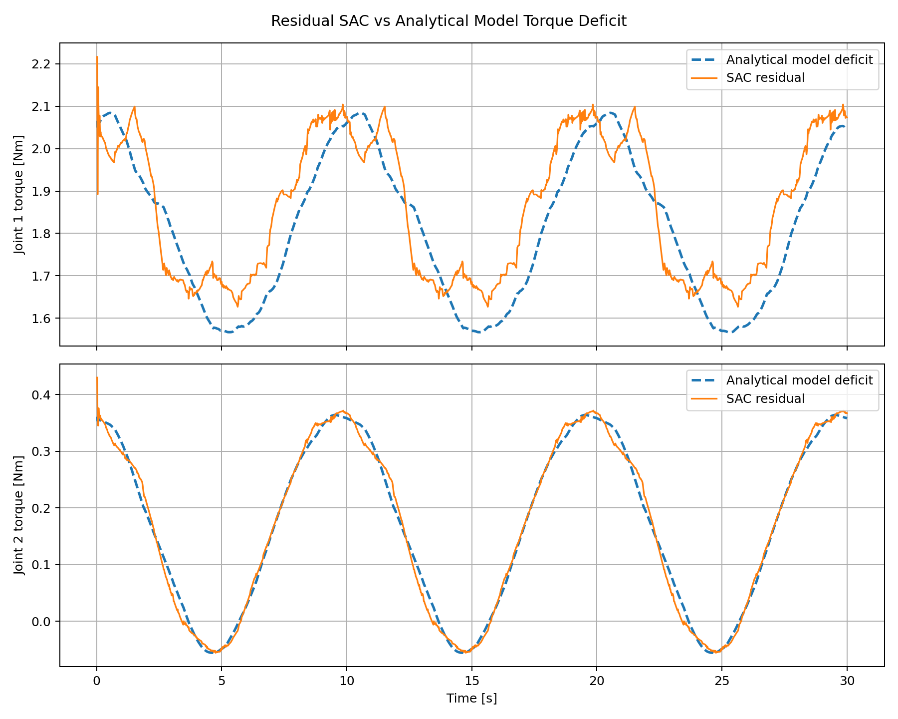
| Metric | Joint 1 | Joint 2 |
|---|---|---|
| Residual-deficit RMSE | 0.0978 Nm | 0.0140 Nm |
| Residual-deficit correlation | 0.880 | 0.996 |
6. Final Controller Comparison
| Controller | EE RMSE | Max error | Geometric error | IoU |
|---|---|---|---|---|
| Exact-model CTC | 0.195 mm | 0.278 mm | — | — |
| CTC, 30% link-2 mass error | 31.116 mm | 39.161 mm | 62.230% | 53.919% |
| Pure SAC | 4.662 mm | 9.930 mm | 6.230% | 93.994% |
| Residual SAC | 1.290 mm | 2.226 mm | 2.353% | 97.658% |
What Classical Control Shows
When the analytical model is correct, computed-torque control remains the strongest solution in this benchmark. Learning is not needed simply because it is available.
What Learning Adds
When the model is deliberately wrong, learning provides value. Residual SAC is especially effective because it preserves the known control structure and learns a smaller correction problem.
7. Refinement and Stopping Decision
After the 100k-step residual policy reached the best measured result, the learning rate was reduced from 3×10−4 to 1×10−4 for an additional 30k steps. Performance did not improve: RMSE increased to 1.530 mm and IoU fell to 96.749%. The 100k policy was therefore retained rather than assuming that more training must be better.
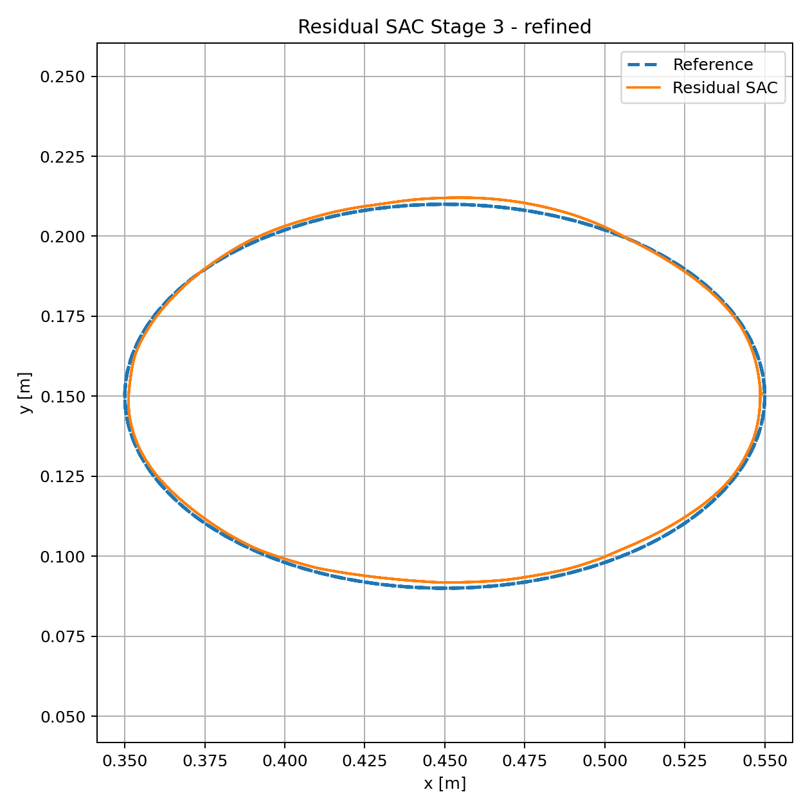
8. Why These Metrics?
Tracking Accuracy
End-effector RMSE and maximum error quantify typical and worst-case Cartesian tracking behavior.
Geometric Fidelity
Area bias, symmetric-difference area, geometric error, and IoU reveal closed-path distortion that RMSE alone can hide.
Control Effort
Torque RMS, peak torque, and saturation distinguish a controller error from a simple lack of actuator authority.
Physical Interpretation
Residual-deficit RMSE and correlation test whether the learned correction is consistent with the actual model error.
9. Practical Limitations
- The study uses controlled simulation so that one model error can be isolated and interpreted.
- Real manipulators introduce simultaneous mass, inertia, center-of-mass, friction, drivetrain, payload, and compliance uncertainty.
- Sensor noise, state-estimation error, communication delay, actuator dynamics, and torque-estimation error are not modeled here.
- The final policies are evaluated on the Stage-3 task distribution; broader trajectory generalization requires separate testing.
- Free-space tracking does not establish robustness to contact or arbitrary external disturbance.
- The exact-model CTC result is an ideal model-consistency reference, not a hardware-level accuracy prediction.
10. Project Resources
Source & Results
Manipulator models, CTC implementation, Pure SAC and Residual SAC environments, curriculum / transfer / continuation scripts, evaluation tools, tests, and selected experiment results.
Technical Report
Detailed report covering the control formulation, training logic, evaluation metrics, analytical torque-deficit comparison, quantitative results, physical interpretation, and real-world limitations.
Project by Sooyong Kim · Robotics & Autonomous Systems Portfolio